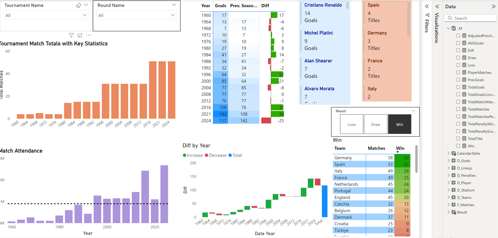

Power BI Dashboards Showcase
Spotify Sales Dashboard
This dashboard provides a detailed analysis of Spotify sales data. Key features include:
- Date Filter: Allows filtering data based on date ranges.
- Customer Generations: Analysis across different generations (Gen X, Gen Z, Millennial).
- Albums, Artists, Genres, Tracks: Breakdown of sales data by these categories.
- Total Amount: Visualization of total sales amounts.
- Yearly Volume Changes: Shows changes in sales volume over the years.
- Employee Invoice Performance: Performance metrics related to employee invoices.
- Total Amount by Date: Breakdown of total sales amount over different dates.
UEFA Euro Dashboard
This dashboard offers a comprehensive view of the UEFA Euro tournament with various metrics and visualizations:
- Filters: Allows users to filter data by tournament name, round name, and result.
- Tournament Match Totals: Displays key statistics related to matches played in the tournament.
- Match Attendance: Shows attendance data with years on the X-axis.
- Goals Chart: Visualizes goals scored by year and the difference compared to the previous season.
- Top Goal Scorers: Highlights the top goal scorers of the tournament.
- Top Title Countries: Lists countries with the most titles.
- Team Performance: Provides data on the number of matches played by each team with filters for wins, losses, and draws.
